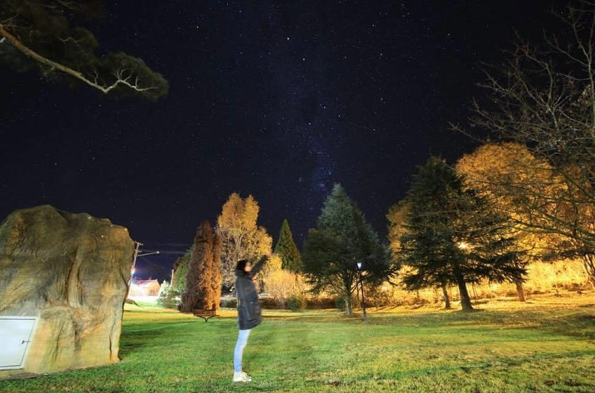

“首犯”李元婧：消失在聚会之前 - WOMEN我们
但她要坦白什么、抗拒什么呢？她只是普通的天津女孩李元婧，她努力维持着女孩们的情谊，她做了再正常不过的举动。朋友们想不明白，她为何却因此成了一名“首犯”？警察认为，她作为团伙的头目，犯了聚众扰乱公共场所秩序罪，检察院批捕后，她的罪名更改为寻衅滋事。
撰文 壮壮
编辑 木瓜海棠
李 元婧曾经相信，没有一个冬天不可逾越。她的27岁生日在2022年12月22日，早在12月初，她就憧憬这次生日聚会，她想请很多朋友，尤其是那些因为亮 马桥喝茶而被影响的姐妹。她也希望，多来点男孩子。她也想调点酒，交换圣诞礼物。经历了11月27号后的种种恐慌、离散、情绪爆发，她为这次重聚赋予别样 的意义。
12月18日，将聚会邀请群发给了朋友们的第二天，李元婧在北京东城区的家中被警方带走。
同大多数普通人一样，在与外界切断联系的孤立审讯中，李元婧会害怕，会恼羞成怒，会崩溃，会大哭，甚至会宁愿相信“坦白从宽、抗拒从严”。
但 她要坦白什么、抗拒什么呢？她只是普通的天津女孩李元婧，她努力维持着女孩们的情谊，她做了再正常不过的举动。朋友们想不明白，她为何却因此成了一名“首 犯”？警察认为，她作为团伙的头目，犯了聚众扰乱公共场所秩序罪，检察院批捕后，她的罪名更改为寻衅滋事。
热腾腾的好朋友
李元婧中学毕业于天津耀华中学著名的实验班，16岁考上南开大学，2016年本科毕业于这所大学的周恩来政府管理学院国际政治专业。2018年，她到澳洲的新南威尔士大学深造，专业从国际政治转到了会计。
朋友们说，李元婧从来没有名校架子，总是扮演着伙伴中最友善、健谈、亲切的那一个。
从照片看，李元婧圆脸，宽下巴，圆圆的合金镜片下眨巴着亮亮的大眼睛，长头发不加修饰地垂下来。说起长发，朋友忆起，李元婧总是骄傲地说，她的发型是好朋友“毛毛”给铰的。
说话的时候，李元婧会脸颊发红。她个子高，腿脚修长，她在社交软件中po过背对镜头的全身照。站在人群中，她总是亲切地微向前佝偻探身，然后拉起朋友的手，突然甜甜撒一声娇：你看我这脚能不能给昆汀看上了？
朋友回忆，后知后觉的元婧总是慢半拍。每当陌生人加入聚会，她总能首先凑上去热腾腾聊个半天，直到分手，才意识到抢了别人主场，又或误了他人的“好事”，然后再羞涩地低下头，瞪着眼睛笑起来。
好友们逐渐发现，元婧一说起话儿来就会忘记走路。若到了一个路口，她突然朝向相反方向站住，看着你一个劲说话，那一定不是在暗示什么，而只是聊到了兴奋处而忘记了周遭。朋友们往往需要相处好一阵子，才能建立把扑腾着的她直接拽走的自信。
深 谙京津的她，毫无保留地地把自己心水的餐厅、乐队、小店介绍给所有新知旧友。“和元婧说话，就像跳入爱丽丝的兔子洞。五道营酒吧开课的老板，酷气的摇滚投 资人大姐，电音聚会里低调的理工科DJ，混迹鼓楼的文艺片导演…认识元婧，就好像认识了她所有的朋友，她全部的世界。”一位亲密朋友说。
图：李元婧社交媒体上的星空照片
仰望星空的人
天文是李元婧最早的爱好之一，在中学（2010-11）和大学（2012-13）天文协会时，她都曾担任过天文社社长，2015年作为组委会主席，主办第五届全国天文社团发展论坛。
她的朋友圈里有着各大高校天文社团的元老达人，手机里精熟着各种观星软件。为了观星，她的足迹遍布世界各地。为了观看2009年的长江大全食，她就曾从天津奔赴千里之外的安徽铜陵，那年她13岁。
为 了观看日全食，她也计划过去印尼，去马达加斯加，去南美。她在旅行公司的运营岗实习过，也考虑过往天文旅行的方向创业。而毕业后去澳洲读书，对她而言不仅 仅是跨越了半个地球，还是让可观可叹、浩瀚无限的天球转了半圈。在她出事后，一位曾与元婧一起同好天文的朋友十分关注她的安危，他印象中的元 婧还是个热爱自然热爱科学，以至于有点“呆”的女孩。
本科时，李元婧经历过孤单的时光，她曾向朋友倾诉，那时她除了与天文社伙 伴交流爱好，往往一个人吃饭，一个人逛街，她怀念旧友，会留出时间把青春期友人的文字独自撰抄好几遍。年轻而苍白的心需要经历多少旅途才敢放肆地张开自 己，才能幸得相濡以沫的交心朋友。
李元婧总是小心地维持友谊，期盼长久。朋友察觉到，她惧惮直接表露自己的情感需求，尽管是话痨，她却始终害怕麻烦他人，不愿向别人输出负能量。
这 样一位“傻”姑娘，对文艺作品所传达的幽微情感，有着纤细丰富到令人讶异的捕捉。曾经，一天三部小西天联映是她送给自己最好的周末约会。她绝不出于刻板的 意识形态而盛赞任何一部“政治正确”的当红影片，而是关注对于同一议题，是否已有更深入、抓人的艺术化表现形式。
挺身而出
“元婧对人际动态十分敏感，虽平时不多置评，但一旦不符合心中朴素正义的情形出现在自己的交际圈里，她都会第一时间挺身而出表达观点，无论其代价是得罪朋友，或‘暴露'于外界。”一位朋友评价。
因此，在意识到密友在微信群内聊起亮马桥时，李元婧主动提出建一个电报群。
很难确定当时究竟有多少人已决定要去现场，也无法隔空推断出飞速发展的事态，或妄断任何人在那些特别的日子里酝酿的心境。但显然，电报群涌入的人越来越多，李元婧很快就认不全了。
在 2022年11月底，派出所的第一个24小时，身为“群主”的元婧受到了首当其冲的审讯压力。据知情律师说，第一次审讯，他们五六个人已被带去抽血，这是 关押前的步骤，但她们在24小时后又都被放了出来。传唤后，包括元婧在内所有人的的电子设备被随案扣押。朋友说，那之后的若干天，元婧夜夜睡不好，她时常 端着手机，直到三四点的凌晨。
这是极度的恐惧，她还担心自己牵累朋友们。她常问：某某是不是因为我被带走？她积极配合警方，发了关于天文观星的“正能量”朋友圈。她到处咨询，找片警好言好语，交流如何能把电子设备讨回来，她觉得能要回来的话，这事儿就能结了。
再之后，她感染新冠，发烧在家卧床。关心她的朋友开始给她织起毛衣。那个短暂的夜晚似乎开始远去。可毛衣尚未织好，警察已再次上门，她只来得及匆匆看了一眼刑拘通知书。
而 那位给她织毛衣的朋友，后来撇下织了一半的毛衣，也被带走了。这位朋友11月27日根本不在北京，没有参加任何聚集事件，她被带走的原因只是因为加入了电 报群。那张罪名栏空白的通知书也捎走了另外许多年轻男女，他们多数甚至尚未反应过来要为自己聘请专业律师。
作为专案组的“首要对象”，李元婧消失得迅速且沉默。

图：星空是李元婧签名式的爱好
难以复原的生活
对于李元婧来说，这一次亮马河事件，让她猝不及防地远离了之前十分“正统”的生活轨道，而既往生活中踏实、温暖、可以依赖的，今天都支离破碎，难以复原。
不 同于坦然休假、得到领导理解、同事关怀、外界支持的其他伙伴，李元婧始终不知道如何向她的雇主-–—普华永道会计师事务所道出自己经历的实情。而上一份国企 性质的工作亦给她带来难处。这是更真实的、大多数中国人的生命状况：与体制及意识形态光谱上各种各种的人与事保持纠缠关系， 即便相信自己无罪，也很难说服亲近体制的长辈、上级和亲友解释自己是受害者，而非惹是生非的源头。
太多因素使得元婧与她的家庭无法暴露于公众视野之下。亲近体制，对于社会中的主流人群，几乎意味着一种下意识的应对策略，沉默，消声，荫蔽，而当李元婧们也被消声乃至消失时，这些策略将会给ta们带来怎样的后果？
与很多年轻人一样，她的生活分成两个部分：八小时属于建制中的工作（无论国企、事业单位还是资本市场），之外属于内心。她们能改变的、想改变的，其实是那么少。
朋友们说，李元婧的生活是开放的，她并不抗拒与各种观点、各种政见的人成为同事、朋友，甚至亲密伴侣，但是她也无法改变自己的家庭和职业路径。因此，她也一直是“正统”的。元婧曾说，她不相信任何集体行动能带来改变，或者说-–—不愿相信。
但这八小时之外的偶然，却完全改变了她作为雇员、女孩、女儿、普通人的全部版图。
“元婧，我们不知道，你是否会在看守所里吃上蛋糕？如果警方为你过上生日，你会是怎样的心情？”这段话，被朋友们写在了寄往朝阳看守所的明信片上。
Thanks for reading WOMEN我们's Substack! Subscribe for free to receive new posts and support my work.